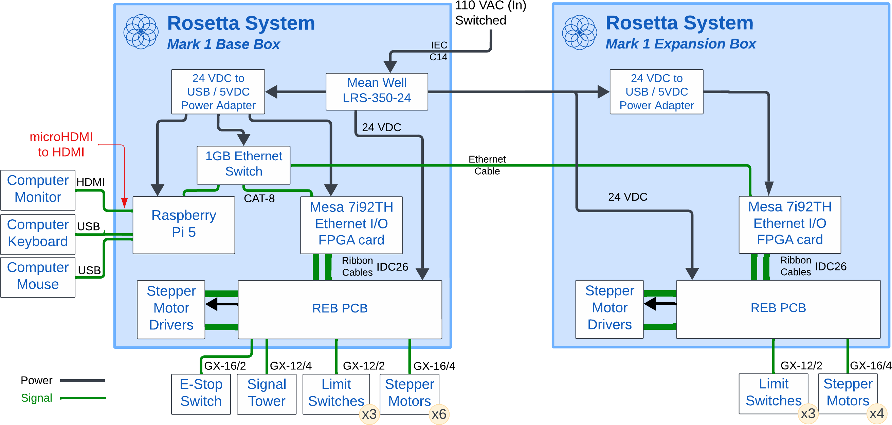
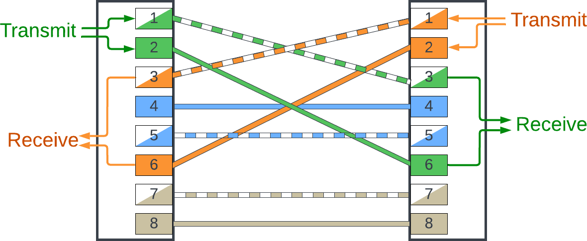
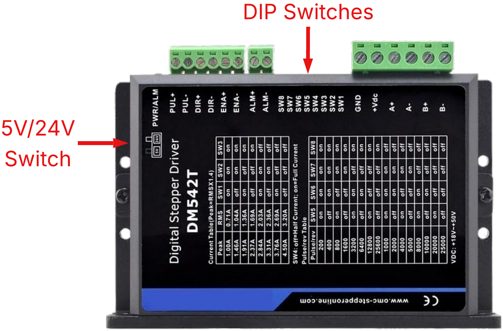
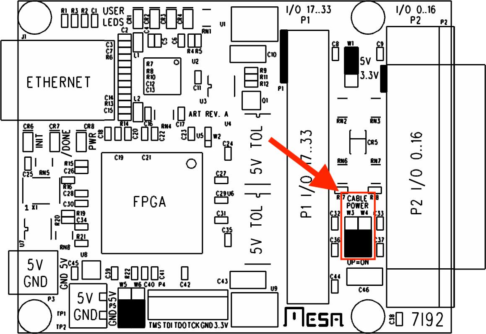

Building a Rosetta: 1. Parts · 2. Common build steps · 3a. With the Rosetta PCB · 3b. Without the PCB · 4. Software
These steps are the same whether the boxes are built with the Rosetta circuit board or with breakout boards. Get the parts first (Hardware Parts), do these steps, then continue with the page for your build.
|
The two boxes
|
|
|
Connections
The overall connections for this system are as shown to the right. The items in the blue box are shipped as the Rosetta system. The boxes in gray and the associated cabling are optional.

Overall Connections
The Wired Network
The Raspberry Pi and the Mesa cards talk to each other over a private wired network, through the Ethernet switch in the base box.
- Plug the Raspberry Pi, the base card and (if used) the expansion card into the switch.
- Nothing else goes on the switch - no router, no internet connection, no other computers. Other traffic on that network upsets LinuxCNC's timing. The Raspberry Pi reaches the internet over WiFi instead.
- The addresses used on this network are:
| Raspberry Pi | 10.10.10.100 |
| Base card | 10.10.10.10 |
| Expansion card | 10.10.10.11 |
Power
In the base box, one 24 VDC to 5 VDC power module powers both the Raspberry Pi and the base card. Switching the card on while the Raspberry Pi is running restarts the Raspberry Pi without shutting it down, which can damage its microSD card. Always switch the whole machine off and on together.
Development (8-channel) Boxes

100 Mbit Ethernet Crossover Cable
The earlier 8-channel boxes are used as a base box: channels 00 - 05 work, and their other two plugs are not used. Some of them have no Ethernet switch: the Raspberry Pi is wired straight to the single Mesa card with an Ethernet crossover cable. An expansion box can't be added to such a box until a switch is fitted.
The wiring configuration for a 100 Mbit Ethernet crossover cable is shown to the right.
Pins 4, 5, 7, & 8 still need to be wired to make this cable work as expected.
There is no benefit to using a gigabit crossover cable.
|
|
Configure the Parts
1.1 DM542T Drivers

DM542T Driver
Configure each DM542T driver (6 in the base box, 4 in the expansion box)
- Set the voltage on the 5V/24V switch to 5V (that switch is located on the side of the DM542T, not the top where the DIP switches are).
- Set the DIP switches as shown in the table below, using the values in the highlighted rows.
| Peak Current | RMS Current | SW1 | SW2 | SW3 | Default Setting | ||
| Axes | Motor | ||||||
| 1.00A | 0.71A | ON | ON | ON | |||
| 1.46A | 1.04A | OFF | ON | ON | X, Z, U, V, & W | NEMA 17 | |
| 1.91A | 1.36A | ON | OFF | ON | |||
| 2.37A | 1.69A | OFF | OFF | ON | |||
| 2.84A | 2.03A | ON | ON | OFF | Sp0, Sp1, A, B, & C | NEMA 23 | |
| 3.31A | 2.36A | OFF | ON | OFF | |||
| 3.76A | 2.69A | ON | OFF | OFF | |||
| 4.50A | 3.20A | OFF | OFF | OFF | |||
| Idle Current % | SW4 | ||||||
| 90% | ON | ||||||
| 50% | OFF | ||||||
| Micro-steps | Steps/rev on 1.8° motor | SW5 | SW6 | SW7 | SW8 | ||
| 16 | 3,200 | ON | ON | OFF | ON | ||
| 32 | 6,400 | OFF | ON | OFF | ON | ||
| 64 | 12,800 | ON | OFF | OFF | ON | ||
| 128 | 25,600 | OFF | OFF | OFF | ON | ||
|
|
1.2 Channel Plugs
The channel plugs are laid out with the even numbers on the top row and the odd numbers on the bottom row. Wire each plug to the step generator with the same number, so the labels on the box match the software.
| Base box | Top row: 00 / 02 / 04 Bottom row: 01 / 03 / 05 |
| Expansion box | Top row: 06 / 08 Bottom row: 07 / 09 |
The axis or spindle on each channel is chosen in the Rosetta Settings program, so any of them can go on any channel. The starting settings are:
| Base box | 00 X, 01 Z, 02 B, 03 W, 04 Sp0, 05 Sp1 |
| Expansion box | 06 U, 07 V, 08 A, 09 C |
|
|
1.3 Mesa 7i92TH Cards
|
 W4 jumper location |
 W6 jumper location |
- Leave the W4 jumper at its factory setting (down - P2's breakout power off). See note 3 on Mesa 7i92TH Pin Mapping.
- Leave the W5 and W6 jumpers at their factory setting (both down). The card then answers at its factory address, 192.168.1.121.
- Label each card Base or Expansion before it goes into its box. The two cards are set up the same way, but are given different addresses.
- The firmware, the address and the jumper change are done during the software setup, which tells you when to move the jumpers.
|
|
Next: building the boxes - 3a. With the Rosetta PCB or 3b. Without the PCB.